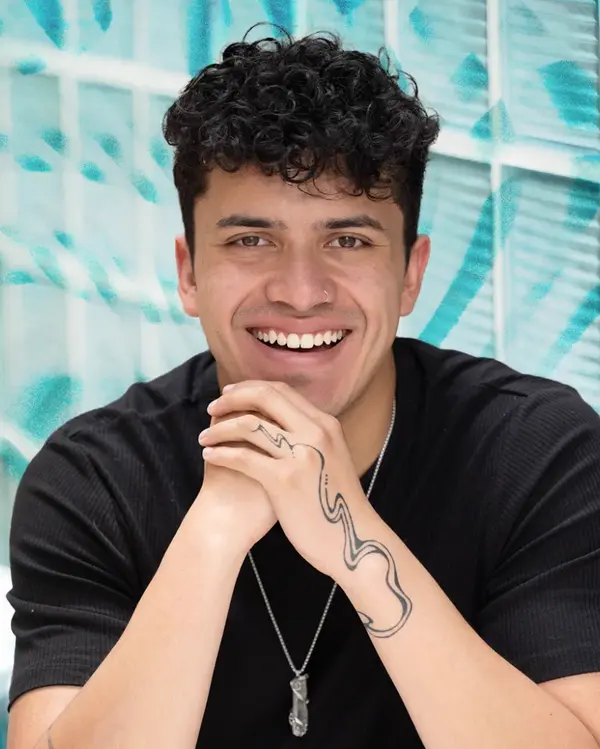
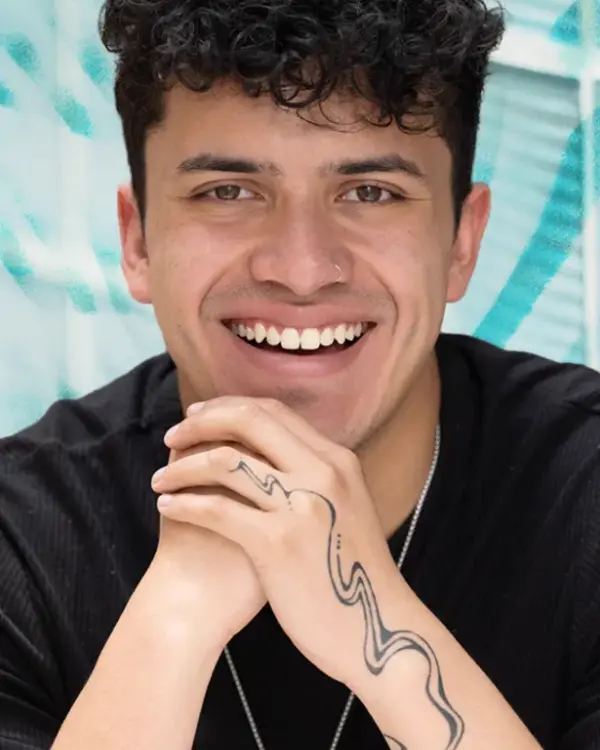
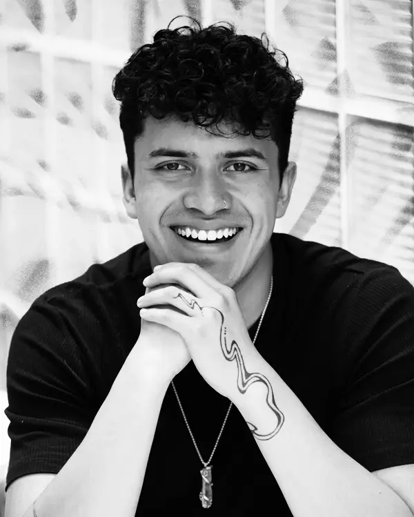
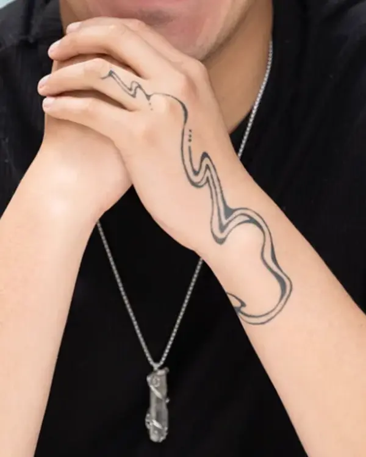
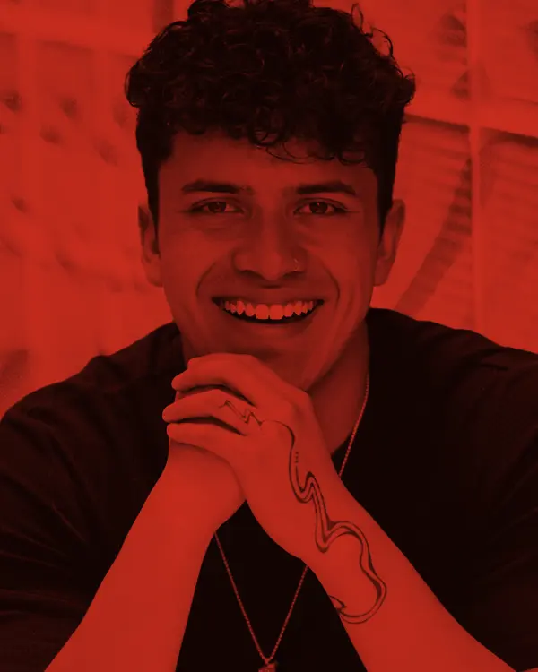
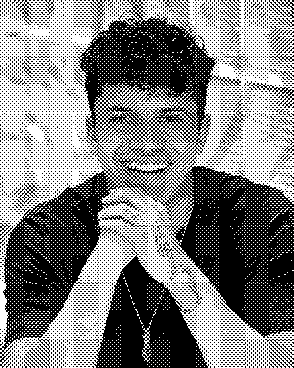
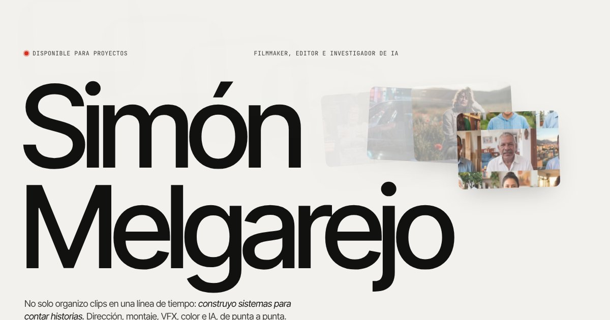
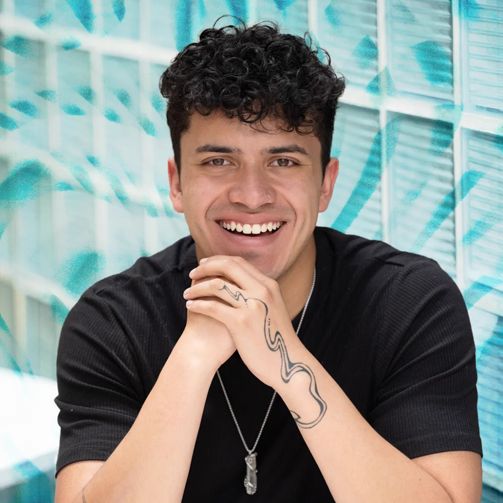

Creación audiovisual
Dirijo, grabo, edito y coloreo. Del guion a la pieza final, en formatos que van del cortometraje al reel.
Ver trabajos





MelgarejoNo solo organizo clips en una línea de tiempo: construyo sistemas para contar historias. Dirección, montaje, VFX, color e IA, de punta a punta.

Imagen OG 1200 × 630Comunicador audiovisual · Colombia

Sobre mí
No solo organizo clips. Construyo sistemas narrativos. Mi proceso combina la mentalidad de un cineasta con la eficiencia de la producción independiente.
Desde operar cámaras de cine hasta gestionar conductos de postproducción, trato cada proyecto como un rompecabezas. Uso la IA como un amplificador, para expandir lo que es posible bajo restricciones.
Hoy dirijo la parte creativa de Lemon Drop, donde cruzamos producción audiovisual, contenido para redes y edición con IA.
Dirijo, grabo, edito y coloreo. Del guion a la pieza final, en formatos que van del cortometraje al reel.
Ver trabajosInvestigo y pruebo herramientas generativas para ampliar lo que una historia puede hacer: video con IA, edición automatizada y flujos que ahorran horas sin quitarle el criterio a nadie.
12 piezas en 40 minutosIlustración a mano, animación y piezas hechas con tiempo. El Invasor, ganador en Cineminutos por el Océano, nació así.
Ver El InvasorPapel, tinta y un solo rojo
Fondo papel, tinta casi negra y un único acento rojo. El rojo marca lo que está vivo: el cabezal, el estado, la cita, el clic.
El número sobre cada muestra es el mejor contraste posible de texto sobre ese color (ink del tema o blanco). Las muestras con transparencia van sobre damero; su contraste está en la tabla.
Calculado con la fórmula de luminancia relativa de WCAG; los colores con transparencia se componen sobre su fondo antes de medir. AA texto normal: 4.5:1 · AA texto grande (24px o 18.66px en negrita) y no-texto: 3:1.
| Muestra | Texto / elemento | Fondo | Ratio | Resultado | Uso permitido |
|---|
Grande, apretada, mucho aire
Contenedor 1520px · gutter fluido
radius = clamp(10px, 1.2vw, 18px). Pills y chips siempre 99px.
Pocas y bajas: la profundidad viene de la foto, no de la caja.
--ease: cubic-bezier(.22,1,.36,1) en toda la interfaz. Colores .25–.3 s; filas .55 s; aparición .9 s (subida de 28px); zoom de imagen 1.2 s; transición de página 620 ms con cubic-bezier(.76,0,.24,1). Todo se apaga con prefers-reduced-motion.
Trazo 1.8 · currentColor · sin emojis
.pill · .pill-dark · .pill-lightBotón o enlace principal. 44px de alto, radio 99px, peso 500. Un solo pill-dark por grupo.
.chip[aria-pressed]Filtros por disciplina o cliente. 36px, radio 99px. El activo se rellena de ink.
.link-arrow · .roundEnlace secundario subrayado con flecha diagonal que se desplaza 2px al pasar; botón redondo de 48px para avanzar y retroceder.
.eyebrow · .sec-head · .sec-title sup · .statusEl eyebrow nombra antes de que el titular hable. El contador entre paréntesis va en mono, a .28em del título. El punto rojo pulsa cada 2 s.
Edición para redes
2026 → 2022 · Arrastra, desliza o usa ← →
.award · .award.on-media · .award.p-award · .kpisEl galardón es una cápsula mono con ★ en rojo. Los KPIs ponen la cifra arriba y la etiqueta mono abajo.
.work-card · .blob-media · .work-infoPortada 4:3 con radio, título a la izquierda y meta mono a la derecha. En hover la imagen escala 1.035 y aparece el blob-cta.
Izquierda: reposo con award. Derecha: estado hover (blob-cta visible).
.type-cover.tone-{ink|accent|clay|sand}Para piezas sin imagen propia. Título apretado arriba a la izquierda (máx. 12ch), meta mono abajo.
.tl · .tl-year · .clip · .clip.cued · .tl-playheadPista horizontal arrastrable con separadores de año en vertical. El clip bajo el cabezal queda “cargado” (borde ink e índice rojo).
01 reposo · 02 cued (bajo el cabezal) · 03 hover
.bay · .nle-clip · .nle-playheadLa versión oscura de la línea de tiempo (página de trabajos): clips con perforaciones de película, archivo .mov en la cabecera y año en rojo.
.pillarTarjeta surface con signo en rojo, título, texto y link-arrow al pie. Se usa en grupos de tres (ver Esencia).
.st-quote · .st-title · .st-contactsPiezas de las colecciones fotográficas, sobre la sala cálida (story-bg). Comillas tipográficas en rojo, colgadas fuera de la caja.
Colección fotográfica · 41 fotos · 6 capítulos
El fuego no se pone en pausa para la foto.
La serie completa
.nav · .nav.scrolled · .menu-btnTransparente arriba; con vidrio esmerilado y filete al hacer scroll. Bajo 900px los enlaces se esconden y aparece el botón de menú redondo.
.pt · .pt-hole · .pt-labelAl navegar, una ventana rectangular se cierra hacia el centro sobre un fondo rojo, muestra el nombre del destino y se vuelve a abrir en la página nueva. 620 ms, cubic-bezier(.76,0,.24,1).
.footer · .footer-mail · .footer-markCierre de todas las páginas, sobre ink: invitación “Hablemos” con círculo rojo que gira 45°, enlaces y el nombre a todo el ancho. Se muestra al final de esta hoja.
Del guion a la pieza final.
Herramientas que ahorran horas.
Piezas hechas con tiempo.
Desliza →
Lo que hace que se vea Simón